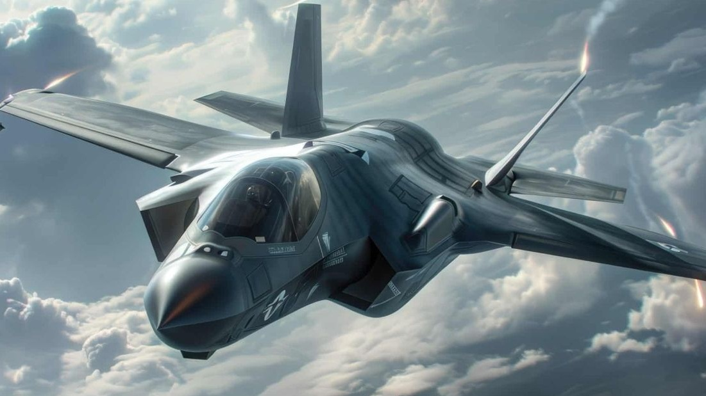
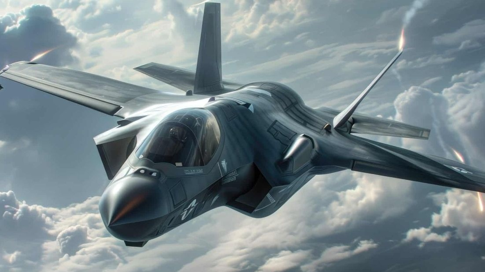
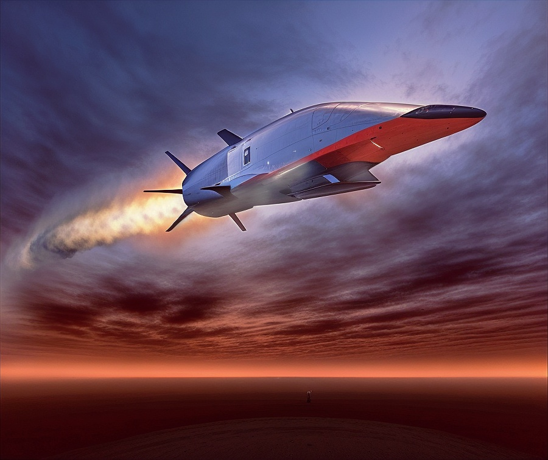
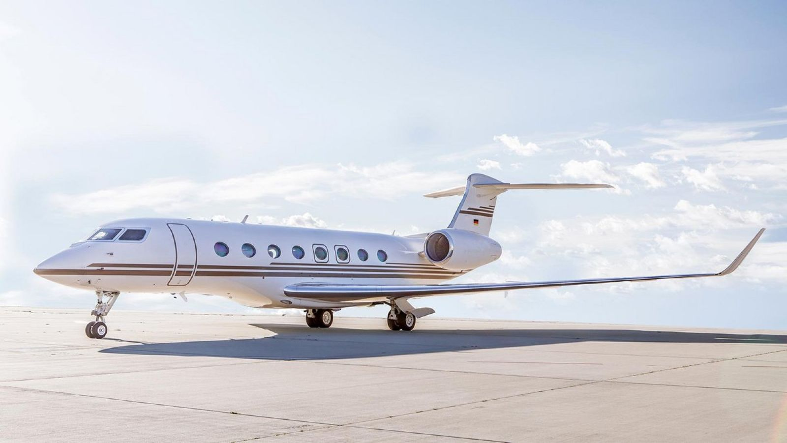

Jets
1. Die schnellsten Jets der Welt
Jets wie die Lockheed SR-71 Blackbird und MiG-25 "Foxbat" fliegen über Mach 3.


- Mach 3.3 Höchstgeschwindigkeit
- Erreicht Höhen von bis zu 26 km
2. Der erste Düsenjet
Die Messerschmitt Me 262 war der erste Düsenjäger im Zweiten Weltkrieg.


- Geschwindigkeit: 870 km/h
- Einsatz: 1944
3. Moderne Stealth-Jets
F-35 und F-22 nutzen Stealth-Technologie, um für Radar unsichtbar zu sein.


- Gute Stealth-Fähigkeiten
- Hohe Manöverfähigkeit
4. Kampfjets der fünften Generation
Jets wie der Sukhoi Su-57 und F-35 bieten moderne Technik und hohe Manövrierfähigkeit.


- Hochentwickelte Avionik
- Supercruise-Fähigkeit
5. Überschallpassagierjets
Der Concorde flog mit Mach 2 doppelt so schnell wie der Schall.


- Flughöhe: 18.000 Meter
- Erste Überschall-Passagiermaschine
6. Jets für Langstreckenflüge
Boeing 787 und Airbus A350 ermöglichen lange Flüge durch hohe Effizienz.


- Hohe Treibstoffeffizienz
- Reichweite: über 15.000 km
7. Die teuersten Jets
Der F-35 Lightning II kostet rund 100 Millionen US-Dollar.
 

- Kosten: ca. 100 Mio. USD
- Multirole Combat Aircraft
8. Zukunft der Jets: Hyperschallgeschwindigkeit
Neue Jets wie Boeing X-51 streben Geschwindigkeiten von Mach 5 und mehr an.


- Hyperschall: Mach 5+
- Zukunft der militärischen Luftfahrt
9. Luxus-Privatjets
Privatjets wie der Gulfstream G650 bieten Luxus und Komfort.


- Reichweite: ca. 12.964 km
- Maximale Geschwindigkeit: Mach 0.925